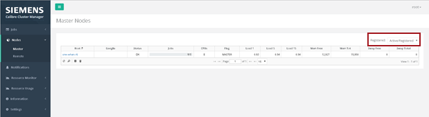
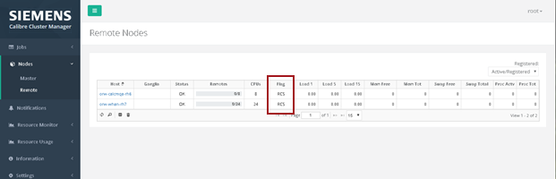
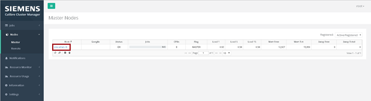
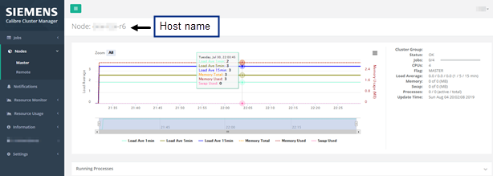

This procedure describes how to use the
CalCM dashboard Nodes web pages to view primary and remote resource
information collected by the Resource Manager application. Using
this information, you can review how resources are allocated for
CalCM jobs and make adjustments to the resources, as needed.
Procedure
- Open a browser and enter the
server name on which the CalCM daemon is running and the dashboard
server port specified in the CalCM configuration file (calcmd.conf).
For example,
DASHBOARDPORT = 9902
enter in the browser,
http://server_name:9902
- Click the Nodes menu item in the left
pane.
This accesses the Master Nodes (primary nodes) and
Remote Nodes information and displays the host, ganglia, status,
jobs, CPUs, flag, load, and memory information for the primary and
remote nodes that are available for CalCM jobs.
You can use the Registered filter in the upper right corner to
view all resources or only those that are registered and active.
If a node is unregistered, in order to use the node for a CalCM
job, you must register it using the register_node command.
Figure 1. Master
(Primary) Nodes Registered Filter
The Flag column displays the following values to indicate the
node status:
UNKNOWN
— Identifies an unregistered node. In order to use this node for
a CalCM job, you must register it using the register_node command.
MASTER — Identifies
a primary node. The primary node is assigned by the MASTER HOST statement
in the CalCM cluster configuration file.
RCS — Identifies
a Remote Compute Server (RCS) node. An RCS node is assigned by the REMOTE HOST in the
CalCM cluster configuration file.
RDS — Identifies
a Remote Data Server (RDS) node. An RDS node is assigned by an RDS HOST in the
CalCM cluster configuration file.
Figure 2. Remote
Nodes Flag Column
- Click the
name of a host in the Host column of the Master Nodes (primary nodes)
page.
Figure 3. Master
(Primary) Nodes Host Column
This displays detailed information for the selected the host.
Figure 4. Host Information